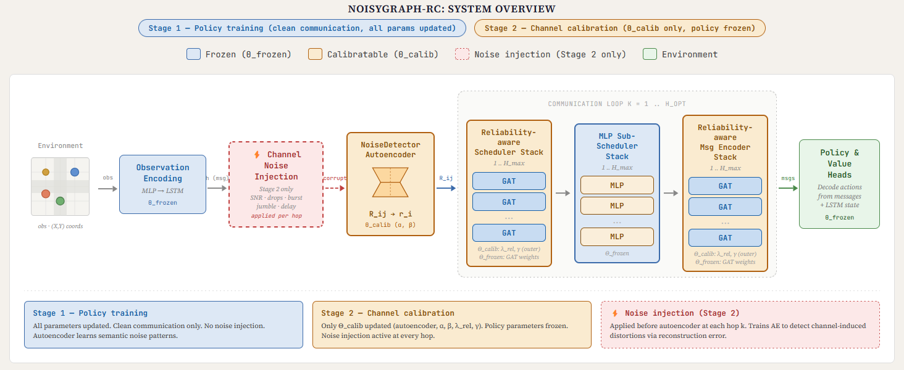
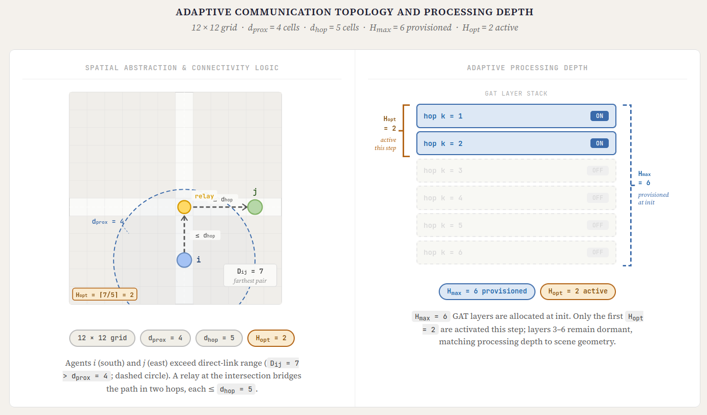
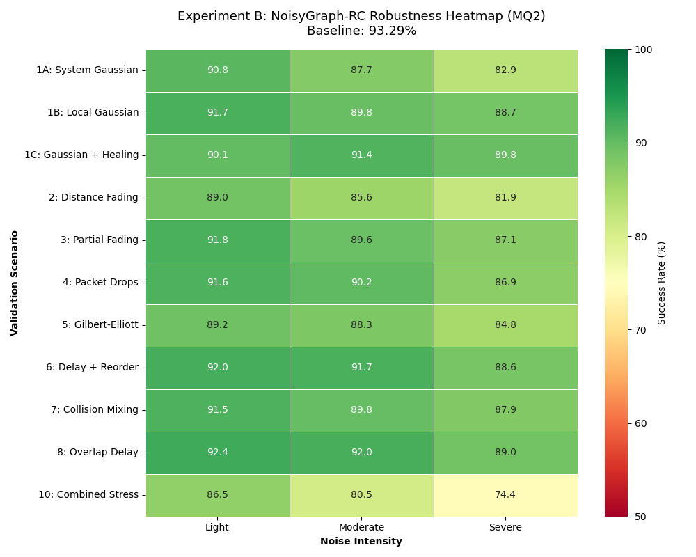

PhD in Computer Science (AI) · Trinity College Dublin · Thesis under examination
Research
Deploying learned multi-agent coordination in the real world requires resilience to environmental and transmission degradation. This thesis develops a channel-robust emergent communication framework for connected autonomous vehicles (CAVs) that dynamically adapts its communication configuration based on the underlying environmental topology.
Problem Formulation & Motivation
Connected autonomous vehicles can navigate unsignalised intersections safely by sharing localised state observations via peer-to-peer networks. A highly scalable approach to this coordination relies on multi-agent reinforcement learning (MARL) with emergent communication, where agents learn an optimal communication protocol simultaneously with their navigation policy.
State-of-the-art emergent communication models rely on the unrealistic assumption of ideal communication (i.e. every message is reliable, arrives instantly and intact). In real-world deployments, perception is ambiguous, and communication channels delay, drop, corrupt, and reorder packets. Because coordination policies act on these corrupted beliefs, unmitigated channel noise presents a real safety risk. My doctoral research investigated how learned communication protocols can be made structurally adaptive to scene geometry and robust to communication noise, without sacrificing the coordination achieved under reliable communication. Specifically, it addresses two distinct forms of noise: semantic distortion from ambiguous observations that propagates through messages, and channel corruption arising from a faulty channel during transmissionition.
The research is organised in three stages: empirical communication-noise vulnerability analysis, systematic noise taxonomy, and development of the NoisyGraph framework.
Empirical Baseline Vulnerability
My initial publications systematically evaluated state-of-the-art emergent-communication architectures (CommNet, IC3Net, TarMAC, GA-Comm, MAGIC) under realistic synthetic channel disruptions, including additive noise, partial and full packet loss, latency and message jumbling, on an unsignalised-intersection benchmark.
The empirical findings revealed a real vulnerability: while baseline models tolerated low-intensity additive noise, even modest packet loss and temporal disruptions triggered sharp success-rate degradation out of proportion to the noise severity, concentrated heavily in high-density, safety-critical traffic states. Demonstrating this systemic degradation provided the empirical evidence that motivated the shift toward developing a dedicated, noise-robust architecture: NoisyGraph.
Taxonomy of Multi-Agent Noise
To formalise these vulnerabilities, I conducted a systematic survey of noise in multi-agent reinforcement learning (under review at JAAMAS). This work proposes a five-category taxonomy of noise sources, ranging from exploration stochasticity to channel interference, and synthesises mitigation strategies across the literature. The analysis identifies emergent communication as the most robust theoretical framework for addressing the two most intractable categories: environmental occlusion and communication channel degradation.
The NoisyGraph Framework
The core contribution of the thesis is NoisyGraph, an adaptive, reliability-aware emergent-communication architecture developed across three phases. Each phase targets a distinct layer of the communication pipeline and is evaluated on the most demanding configuration of the intersection benchmark (18×18 grid, up to 20 vehicles, partial observability).

Phase I: Spatially Adaptive Topology Construction
Prior emergent-communication frameworks rest on three architectural assumptions: a fixed connectivity structure, whether global broadcast or an always-complete graph, a predetermined number of communication rounds, and a static mapping from rounds to processing layers. Each has a cost. In sparse configurations the fixed structure cannot extend reach far enough to cover the agent spread, leaving critical information out of range. In dense clusters an always-complete graph propagates redundant messages across every pair at once, diluting informative signals and loading the attention mechanism unnecessarily. And a static round-to-layer mapping decouples computational depth from the actual complexity of the configuration at each step.
NoisyGraph replaces these priors with a spatially grounded architecture. At each environment step it records the physical coordinates of all active agents and constructs a dynamic communication graph, linking pairs within a proximity threshold directly and connecting more distant pairs through relay chains of intermediate agents whose separations fall within a hop-distance budget. The construction simultaneously determines , the minimum hop count required to span the farthest agent pair, which then dictates how many hop-specific graph-attention layers are activated for that step. Communication rounds and processing layers stand in one-to-one correspondence, both derived from the instantaneous geometry of the scene.
The design serves a second purpose beyond efficiency. Every additional hop is an opportunity for distortion to accumulate, so avoiding excessive hops reduces the area over which noise can propagate before any explicit reliability estimation is applied. Phase I therefore establishes the foundation on which the later mechanisms operate.
Result. Evaluated on the standard non-signalised intersection benchmark at the Hard difficulty setting, an 18×18 grid with up to 20 agents and limited visibility, NoisyGraph achieves an 89.88% collision-free success rate against 88.46% for MAGIC, 87.55% for IC3Net and 74.00% for CommNet. Inter-agent distance correlates with the dynamically computed at , confirming that communication depth adapts in a geometry-aware manner.

Phase II: Unsupervised Reliability Estimation
Phase II addresses semantic noise, the distortion that arises when environmental complexity, partial observability or occlusion causes an agent to encode degraded or ambiguous information into the message it sends. This is distinct from corruption acquired in transit, which Phase III handles.
An autoencoder-based detector processes each outgoing message and computes its reconstruction error against the learnt manifold of typical messages, treating messages that are difficult to reconstruct as likely to carry unreliable content. The error is converted into a per-message reliability score and integrated into the attention mechanism through a reliability-weighted fusion, with the attention logits modulated by a scaled log-reliability term so that unreliable messages are down-weighted in neighbour selection and feature aggregation alike. The approach requires no labelled examples of corruption, and it detects distortion at the message level after encoding rather than at the observation stage.
Result. As vehicle count and occlusion increase, NoisyGraph-R reduces performance degradation by 19 to 29% relative to baselines. In the cluttered regime it holds 89.64% success at 7.23% degradation, against 8.97% for the base model and 10.23% for MAGIC. Reconstruction error correlates with agent density at $\rho = 0.9187$ and with task success at , confirming that the detector responds to environmentally induced corruption and that the corruption it finds is task-relevant.
Phase III: Channel Calibration via Representation Fine-Tuning
Phase III extends the same reliability pathway to channel noise, meaning corruption introduced during transmission. NoisyGraph-RC adopts a two-stage strategy. The reinforcement-learning policy is first trained under reliable communication, and a targeted calibration phase then fine-tunes only the reliability-specific parameters, namely the autoencoder and a subset of the graph-attention reliability weights, under a configurable mixture of six impairment types: additive noise, SNR-based fading, burst errors, packet drops, delays and message jumbling.
Separating the two stages preserves the coordination policy learnt under clean conditions while allowing the autoencoder to learn the reconstruction patterns characteristic of channel-induced corruption. One detection pathway therefore covers both semantic and channel noise.
Result. Across eleven validation scenarios spanning all six impairment types, NoisyGraph-RC maintains an 88.34% average collision-free success rate against 79.45% for the base model and 74.47% for MAGIC. Degradation grows gracefully with severity, at 2.69%, 4.51% and 7.65% for light, moderate and severe intensities. Under worst-case combined stress, with simultaneous burst errors, low SNR and packet loss, it holds 74.37% against 56.90% for the strongest baseline. Ten of the eleven configurations stay within acceptable margins, and that combined-stress case is the only one to exceed the robustness threshold, which marks multi-source corruption as the open problem.

Translational Impact & Industry Applicability
A core design principle unifying this research is the separation of concerns: optimising base coordination policies independently of channel robustness, and utilising a source-agnostic reliability pathway that filters representations regardless of whether noise originates from sensor occlusion or network interference, a property measured by an MSE sensitivity ratio of 0.74 between the two noise sources. This modular philosophy enables direct transfer to broader multi-agent domains, an architectural property currently being validated in my active UAV swarm project.
Beyond autonomous vehicles, the methodological findings from this thesis address core challenges in applied data science and production machine learning. Designing learning systems that behave predictably under degraded, noisy, or out-of-distribution inputs translates directly to risk modelling, fraud detection, and transactional time-series forecasting.
Furthermore, as decentralised AI systems scale, managing network bandwidth constraints, establishing implicit trust boundaries, and coordinating policies under partial observability are becoming primary engineering bottlenecks. Resolving these challenges required deep technical execution across deep reinforcement learning, graph attention networks, unsupervised anomaly detection (autoencoders), and statistically rigorous experimental design.
Publications
-
CAV Unsignalised Intersection Crossing with Unreliable Emergent Communication: A Comprehensive Analysis under Diverse Disruptions.
European Journal of Artificial Intelligence, ATT 2024 Special Issue — In final review, DOI pending. -
Noise in Multi-Agent Reinforcement Learning and Emergent Communication: A Systematic Taxonomy and Survey of Challenges and Solutions.
Under review, Autonomous Agents and Multi-Agent Systems (JAAMAS). -
CAV Unsignalised Intersection Crossing with Unreliable Emergent Communication.
ATT'24: Workshop on Agents in Traffic and Transportation, Santiago de Compostela, 2024 — Open access (CEUR). - Thesis: Channel-Robust Emergent Communication: Mitigating Complex Network Distortions via Reliability-Aware Graph Attention. Trinity College Dublin, submitted March 2026 (Under examination).